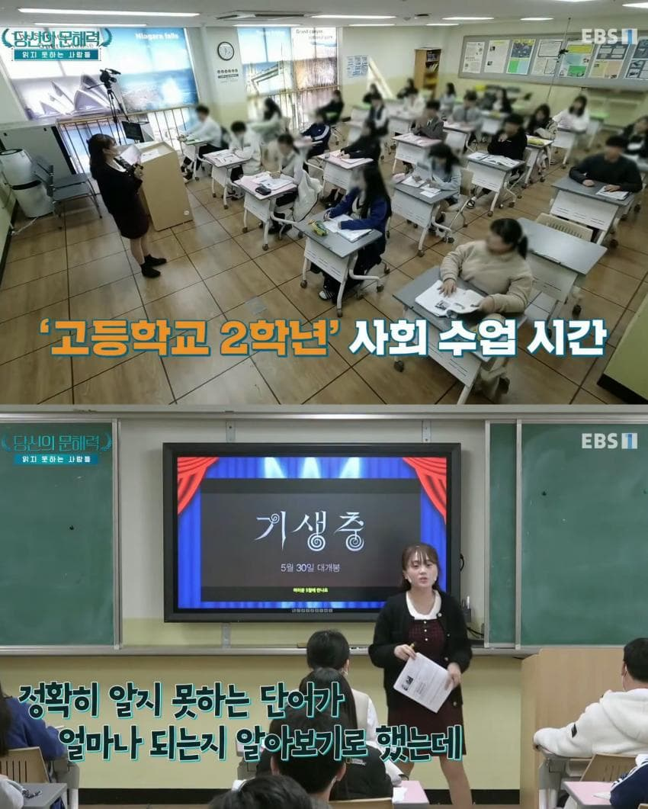
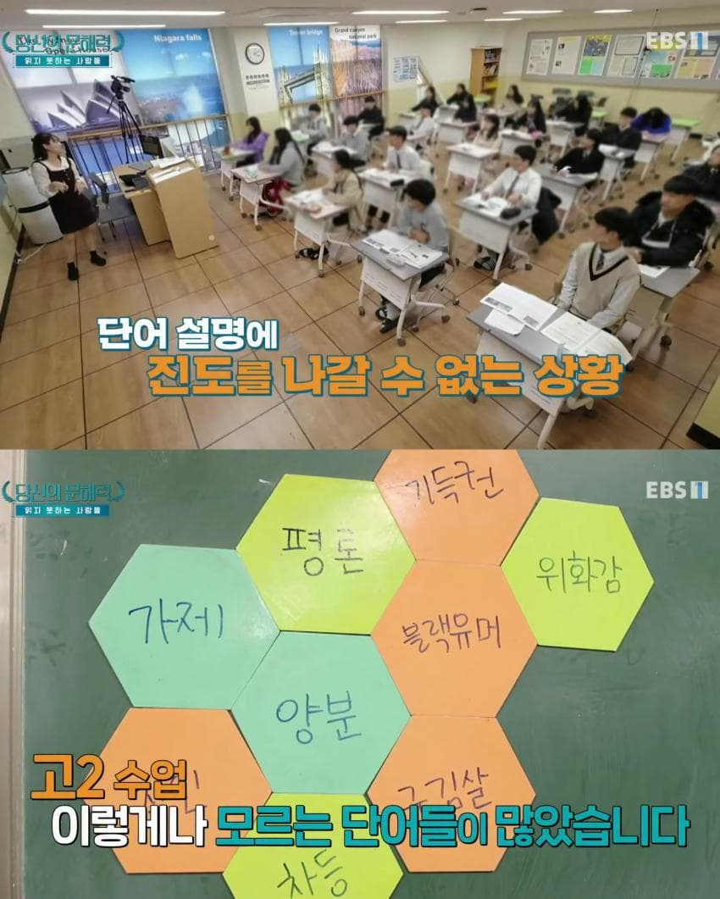
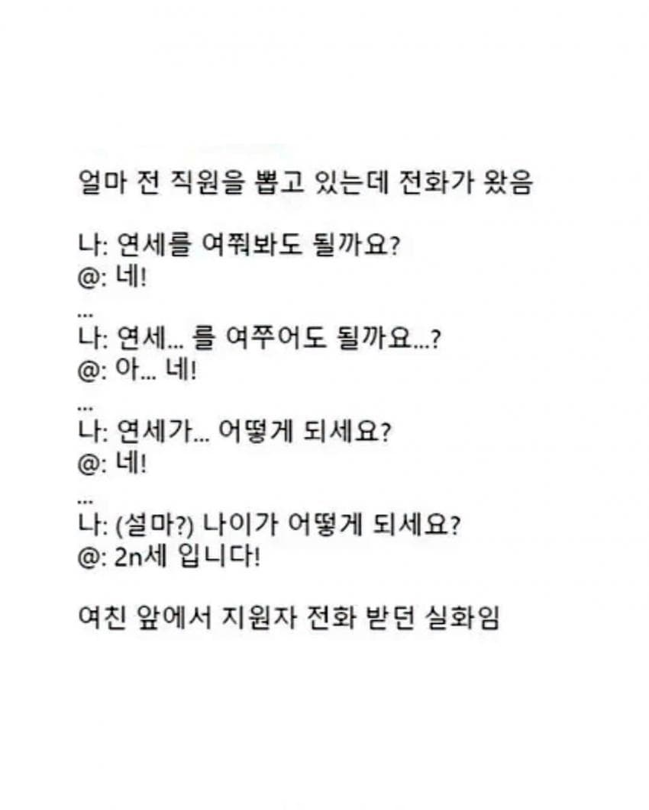
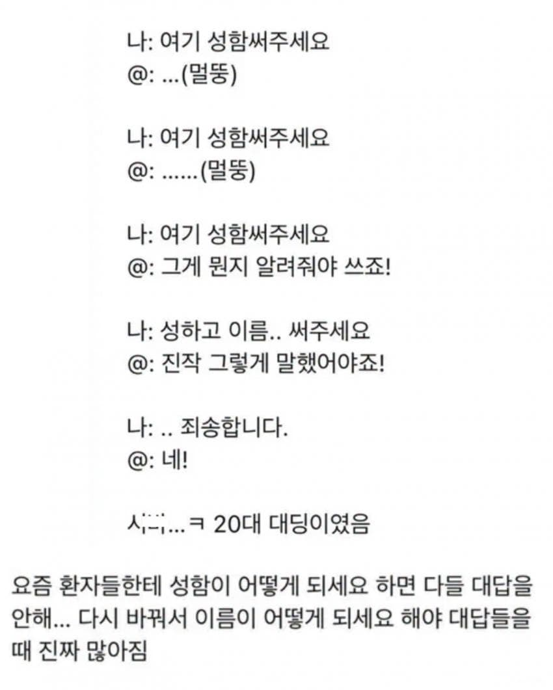
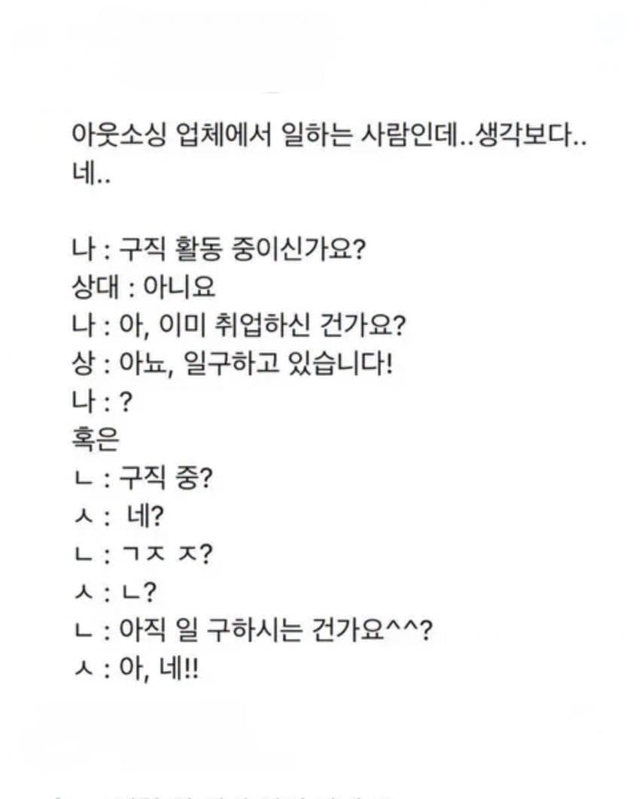
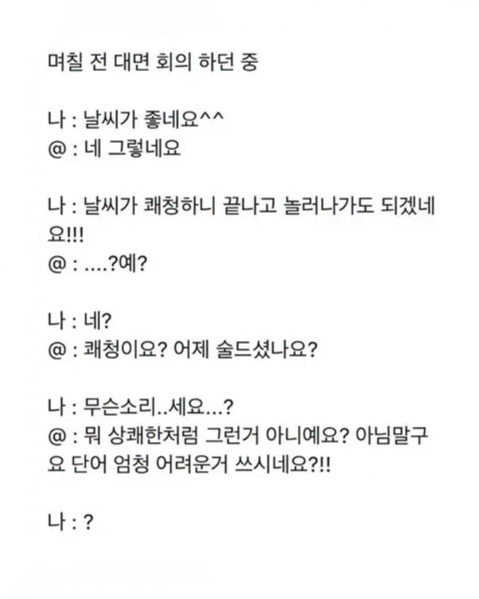

학창시절에는요......?
성함은 유치원때 이미 접하지 않음?
이걸로 우월감느끼는 새끼 없제?
성장하면서 대부분 자연스럽게 학습되는 것들 아닌가
책을 안읽어서 그런가
전세계적 현상같더만 몇 백년후엔 경계선지능이 천재가 되는 세상이 올지도
어? 나 이런내용의 영화 개드립에서 본거같아!!
이래서 한자 공부해야됨
1. 여기서 문제 되는 건 문해력이 아니라 어휘력임
2. 한자는 중요하고 한자를 해독하는 건 매우 유용하지만 그거랑 별개로 여기서 필요한 건 한자가 아닌 한자어임. 글자가 한자여야 할 필요는 없음. 인생에서 할 줄 아는 게 한자 급수 딴 게 전부인 엠뒈 새끼들은 다 거르고
3. 본문 중에 주작이 없다고는 말 못하겠지만 현실에 이런 사람 개많음
4. 원인은 이거임. 어느 시대에나 무식한 사람은 있었는데 그 무식함이 쪽팔리는 게 아닌 병신 시대가 된 거. 예를 들면 양분 이야기 하는게 양분이 뭔지를 모르면 헠헠 내가 그런 기초 단어도 모르는 바보였나 보구나 허겁지겁 찾던 시대에서 '뭐 시발 어려운 말 쓰고 지랄이야'가 기본값이 됨
다른 걸 틀렸다고 하면 피발작 하면서 틀린 걸 다르다고 하는 건 뭐라 못하는 병신 보1지 시대가 만들어낸 결과물임
저능아들 그냥 대갈통후려버리고싶네
쌍팔련도도 아니고 개인이 죄다 스마트폰 가지고 다니는 시대에 단어의 뜻을 모른다?
개편하다 = 존나 편하다
공교육 박살난 거지뭐
오냐오냐 키운 교육의 말로
한자를 안배워서 그럼
한자를 배우면 어떤 단어를 들었을 때 연상 시킬 수 있는 능력이 생김.
그게 없으니 단어를 그 자체 하나로만 기억하니 많이 기억하기도 어렵고 유추하기도 어려움.
실제 애들 만나보면 걍 비슷함. 공포 마케팅이라고 본다.
알바 하면서 많이 접했는데...